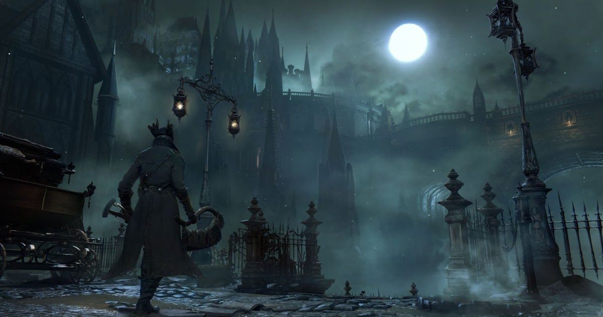
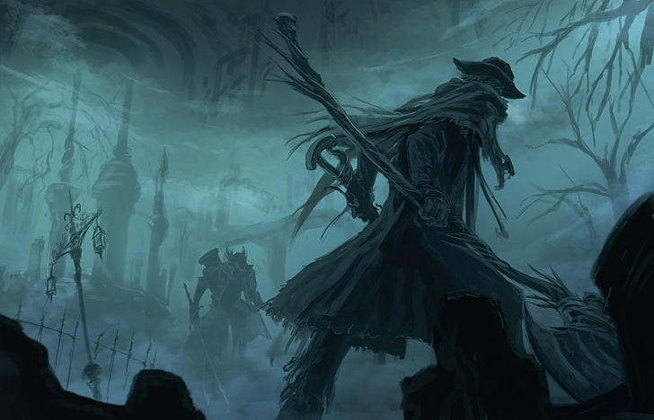
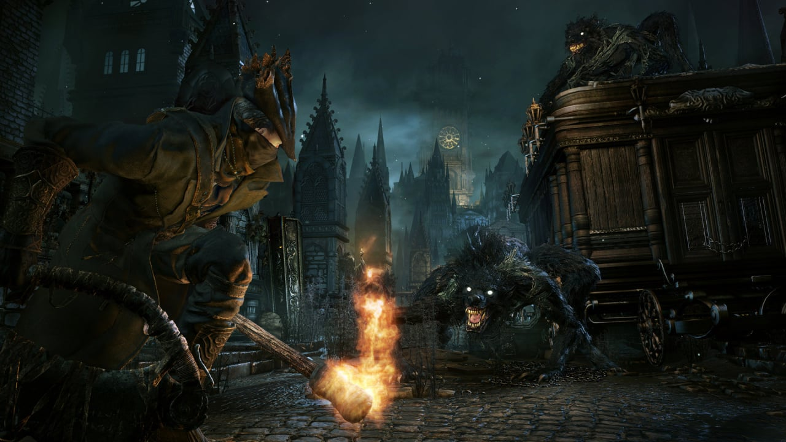
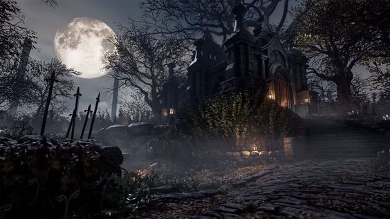

Quienes hayan jugado Bloodborne comprenderán que su historia es, cuanto menos, un enigma fascinante. No se trata de una falta de narrativa convencional, sino de un diseño que invita a los jugadores a desentrañar su trama a través de los detalles ocultos en cada objeto encontrado. La complejidad de Bloodborne reside en su división de la realidad y la intrincada interacción de múltiples actores, lo que posiciona al jugador en un segundo plano hasta el clímax del juego, donde se toma una decisión crucial que determinará el destino de la humanidad. Este enfoque narrativo es característico de las obras maestras de From Software y del genio creativo de Hidetaka Miyazaki, quien ha perfeccionado el arte de contar historias a través de la exploración y el descubrimiento.
Bloodborne comienza con tu personaje, el Cazador, llegando a la antigua ciudad de Yharnam en busca de un remedio para una enfermedad desconocida. Yharnam es famosa por sus prácticas de sangre medicinal, pero al llegar, descubres que la ciudad está plagada de una extraña enfermedad que ha transformado a sus habitantes en bestias monstruosas.
La caza de la noche te sitúa en el centro de una lucha desesperada por sobrevivir y desentrañar los misterios oscuros que envuelven a Yharnam.
La historia comienza con el jugador llegando a Yharnam en busca de una cura para su enfermedad. La ciudad está envuelta en un ritual de sangre, donde los ciudadanos se inyectan una sustancia conocida como Sangre Pálida para curar sus dolencias. Sin embargo, la Sangre Pálida tiene efectos secundarios oscuros, transformando a muchos en bestias salvajes. El jugador descubre que detrás de este ritual se encuentra la Iglesia de la Sanación, una organización religiosa que busca controlar el poder de la sangre a cualquier costo.
El jugador se une a los Cazadores, una orden secreta dedicada a eliminar a las bestias y mantener el orden en Yharnam. A medida que avanza, descubre que los Cazadores tienen sus propias agendas y secretos oscuros. Se enfrenta a criaturas grotescas, como hombres lobo, monstruos tentaculares y horrores cósmicos, mientras desentraña la verdad detrás de la enfermedad y el ritual de sangre.
El jugador descubre el Sueño del Cazador, un reino onírico donde reside el misterioso Vigilante del Sueño. Aquí, el jugador recibe visiones y guía de entidades cósmicas conocidas como Grandes, seres antiguos y poderosos que influyen en el destino de Yharnam y el mundo. A medida que explora el Sueño del Cazador, el jugador descubre la verdadera naturaleza de la enfermedad y su conexión con los Grandes.
La historia culmina con el descubrimiento de los Grandes, seres cósmicos que habitan en un plano más allá de la comprensión humana. El jugador se enfrenta a los Grandes en combate, desafiando su poder y buscando comprender su papel en el destino de Yharnam. Al final, el jugador debe tomar decisiones difíciles que afectarán el destino de la ciudad y su propia existencia.
Aquí te dejo el trailer de Bloodborne para que te animes a jugarlo, junto con una emblemática frase:
"Bestias por todas partes, serás uno de ellos tarde o temprano." -Padre Gascoigne